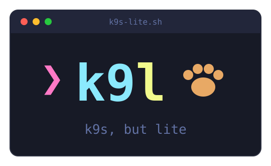

A k9s-style terminal UI for Kubernetes in pure Bash + kubectl.
No Go binary, no tview/tcell, no jq - nothing to install.


Click a button above, or click the terminal and try j/k, / to filter, o to sort, or :svc to switch resources.
Features
-
Nothing To Install
One Bash script and the
kubectlyou already have. No Go binary, no package manager, no admin rights - copy the file onto a jump host and run it. -
Works Where You Are Stuck
Built for locked-down corporate machines: Git Bash on Windows, bastion hosts, minimal containers. bash 3.2 and up, including the system bash macOS still ships.
-
Standard or CRD?
Any kind
kubectlknows works in:command mode - pods, services, statefulsets, your own CRDs, OpenShift routes. Discovery is implicit, so nothing needs teaching about your cluster. -
RBAC-Friendly By Design
Nothing requires cluster-wide permissions. When listing namespaces is Forbidden you simply type the one you can see, and the view stays locked there until you say otherwise.
-
OpenShift-Aware
Set
K9L_KUBECTL=ocand:routesworks,ugives you a route's full TLS-aware URL on your clipboard, and the namespace picker uses RBAC-filtered projects. -
Logs Without Leaving
Press
lfor logs inside the box,fto follow live,wto word-wrap long lines, or pan sideways with the arrows. Follow mode polls on the refresh tick, so there are no background processes to leak. -
Spot Trouble Fast
Status colors follow k9s, so crashloops and errors are red on sight. Sort by restart count with
o, filter with/, and jump straight intodescribe, YAML, or events. -
Power Users Welcome
Shell into a pod with
s,kubectl editwithe, delete with confirmation, browse every kind the cluster supports witha. Interactive commands hand over the real terminal, then restore your view. -
Updates Itself
k9l --updatechecks the latest release, verifies the download, and replaces itself atomically. A once-a-day background check nudges you when a release lands - and turns off completely for air-gapped sites.
Quick start
Grab the single-file build from the releases page and run it - that one script is the entire program.
curl -LO https://github.com/bguruprasad/k9s-lite/releases/download/v0.13.1/k9s-lite.dist.sh
bash k9s-lite.dist.sh -n my-namespaceNo cluster handy? K9L_DEMO=1 k9l runs on built-in demo data -
the same data this page's terminal is based on.
curl blocked?
Corporate proxies often let browsers through but not CLI tools. In order of least friction:
- Open the releases page
in your browser and download
k9s-lite.dist.shdirectly. - On Windows, PowerShell uses the system proxy:
Invoke-WebRequest -Uri https://github.com/bguruprasad/k9s-lite/releases/download/v0.13.1/k9s-lite.dist.sh -OutFile k9s-lite.dist.sh - Or tell curl about your proxy explicitly:
curl -x http://your-proxy:8080 -LO <url>